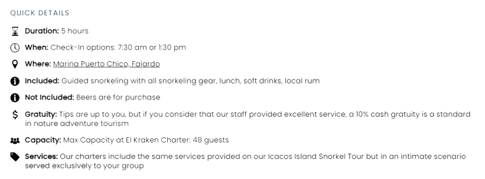

El Kraken | Private Boat Charter
Best Value in Fajardo • Icacos Island!

Icacos Island Snorkel Private Charter for up to 48 guests
Go Snorkeling in Puerto Rico with your family, friends, and work colleagues or host your private event, pop the question, get married, or host your wedding reception on board El Kraken. El Kraken is the perfect scenario for private events.
El Kraken’s open area, perfect for events, is an exclusive experience that our guests remember for years.
Over the years, we have built a community of visitors, travelers, and residents.
Itinerary for Snorkeling tours: For other events like weddings, feel free to coordinate with our staff after the reservation is completed
Our Puerto Rico Boat Charter starts from Marina Puerto Chico. As we navigate Our Don Innovation among the Fajardo coastline, enjoy the views and information our interpretive guides will share. Approximately 20 minutes later, we’ll enter the Icacos Islands Nature Reserve, where you’ll spot the chain of islands that make this nature reserve special. Bring an underwater camera to capture the colorful schools of fish and sea life swimming through the vibrant and ancient limestone formations. Snorkeling for an hour and thirty minutes in the La Cordillera area gives you another perspective, with schools of sea life swimming through the coral reef formations. Snacks and drinks will be ready after you’ve snorkeled up an appetite. Enjoy the view over lunch as we exit the snorkeling site and navigate towards the world-famous Icacos Island Beach, where we will spend two hours. Then it’s back to the Marina.
Important note:
Changes on the itinerary can be discussed and approved at reservation or before your charter date. Feel free to reserve online and add the notes of changes that you’ll like to request. Our planners will go over them and get back to you with options.
Options include:
Changes in the amount of beach or snorkeling times
A request for cakes or food items. Incurred by guests
Decoration. Incurred by guests